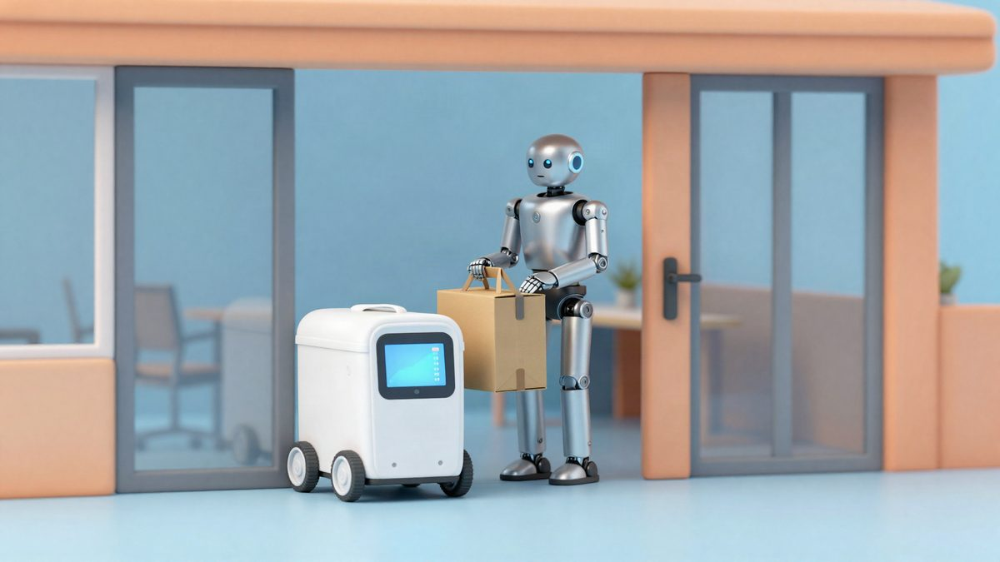
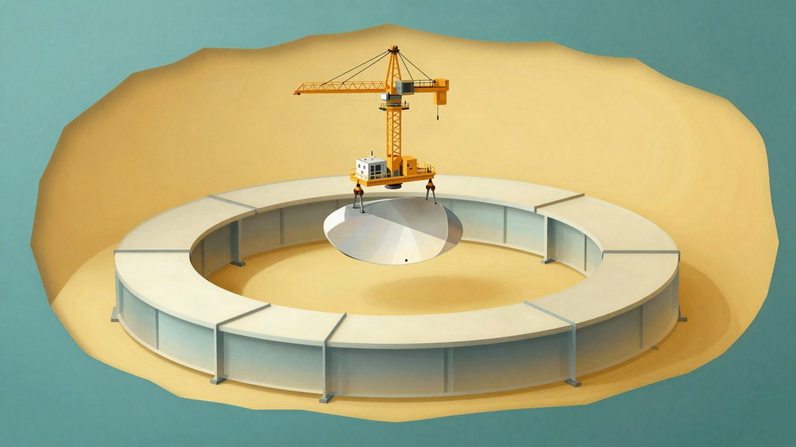

Yandex navodno do kraja godine pokreće pilot dostave humanoidnim robotima u zgradama

Yandex navodno do kraja 2026. pokreće pilot dostave humanoidnim robotima na četiri lokacije, tvrde dva izvora za Kommersant. Rover bi vozio narudžbu do ulaza, a humanoid bi je nosio unutar zgrade. Yandex je službeno potvrdio samo testiranje dostave do radnih mjesta zaposlenika.
Yandex navodno planira do kraja 2026. pokrenuti pilot dostave humanoidnim robotima. Dva izvora s IT tržišta rekla su Kommersantu da bi projekt u prvoj fazi obuhvaćao četiri lokacije. Shema je hibridna: dostavni rover vozi narudžbu ulicom do ulaza u zgradu, a unutra paket predaje humanoid. Koji će se model robota i koji software koristiti u pilotu, nije rečeno.
Humanoid ne bi zamijenio rover. Izvori opisuju da bi služio samo za dio rute unutar zgrade, gdje kotačima smetaju vrata, stepenice i liftovi. Koliko bi se s tim snašao, zasad nije poznato.
Što je službeno potvrđeno
Yandex je Kommersantu odgovorio samo da trenutno testira dostavu narudžbi od robota dostavljača do radnih mjesta zaposlenika, a o planovima će govoriti kasnije. Je li humanoid dio tih testova, iz odgovora nije jasno. Rokovi i broj lokacija poznati su samo iz riječi izvora. Jedan od njih tvrdi da se humanoidi na ulicama neće pojaviti još barem više od godinu dana.
Odakle humanoid
RBC je u proljeće 2025. pisao da će se Yandex baviti softwareom za humanoidne robote i da bi s vremenom mogao krenuti i u njihovu proizvodnju. U jesen 2025. Yandex je pokazao prvog humanoida. Kommersant navodi da je hardware Unitreeov model G1, a software vlastiti Leshy OS. Hoće li pilot koristiti tu kombinaciju, nije objavljeno.
Flota rovera već je velika. Yandex navodi da je u drugom tromjesečju 2026. premašila 1.000 vozila, koja su u tom tromjesečju obavila više od 260.000 dostava. Do kraja 2027. planira se proizvesti 20.000 rovera.
Ograničenja prema stručnjacima
Stručnjaci koje je pitao Kommersant slažu se da je pilot ponajprije tehnološki, a ne komercijalni.
- Konstantin Tolstoj iz MWS-a procjenjuje da je autonomno upravljanje u najboljem slučaju uspješno u 90 % slučajeva, a u jednom od deset ponašanje robota može biti nepredvidivo. To je stručna procjena bez navedene metodologije.
- Po njegovoj procjeni, Unitree G1 jednom rukom podiže najviše 1 do 1,5 kg. Unitree u specifikacijama navodi oko 2 kg za G1 i oko 3 kg za G1 EDU, ovisno o položaju ruke. Yandex nije objavio ograničenje težine tereta u pilotu.
- Jevgenij Dudorov iz Korporacije robotike kaže da takvi roboti pri punoj eksploataciji traju u prosjeku do pola godine, a onda treba zamjena ili veći popravak.
Ekonomika
Georgij Koroljov iz ATK Consultinga smatra da projekt u idućih nekoliko godina neće postati masovan jer je humanoid još skuplji i od kurira i od rovera. Rovere Yandexa smatra jeftinijima od kurira. Vrijednost pilota vidi u prikupljanju podataka o stvarnim scenarijima i inženjerskih kompetencija, a projekt djelomično ocjenjuje i kao imidžni.
U X5 Digitalu vide praktičnu primjenu. Mihail Bujlov kaže da bi humanoidi mogli ublažiti vrhunce potražnje za kuririma, primjerice po lošem vremenu.
Yandex je najavio da će više detalja o planovima objaviti naknadno.
Izvor: Tproger
Povezani članci
- Tesla od drugog kvartala 2027. uvodi Model Y u roboTaxi flotu, a Cybercab bit će dostupan za kupnju do kraja godine22. listopada 2026.
 ChatGPT agent navodno otkrio curenje osobnih podataka koje je dvije godine prolazilo neprimijećeno16. studenoga 2026.
ChatGPT agent navodno otkrio curenje osobnih podataka koje je dvije godine prolazilo neprimijećeno16. studenoga 2026.
ITER je ugradio sedmi modul tokamaka: 1.400 tona spušteno uz samo 5 cm razmaka28. studenoga 2026.